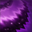

Kassadin takes reduced magic damage (10%) and ignores unit collision.
Kassadin fires an orb of void energy, dealing 65 / 95 / 125 / 155 / 185 (+70% of ability power) magic damage and interrupting channels. Kassadin also gains 80 / 110 / 140 / 170 / 200 (+30% of ability power) magic shield for 1.5 seconds.

Kassadin attacks deal an additional 20 (+10% of ability power) bonus magic damage. Active: Kassadin charges his blade, causing his next attack to deal 50 / 75 / 100 / 125 / 150 (+80% of ability power) magic damage and restore 4 / 4.5 / 5 / 5.5 / 6% of his missing mana, increased to 20 / 22.5 / 25 / 27.5 / 30% of his missing mana against champions.

Kassadin Force Pulse's cooldown is reduced by 0.75 seconds whenever any ability is used near Kassadin. Active: Kassadin unleashes a void pulse, dealing 60 / 90 / 120 / 150 / 180 (+85% of ability power) magic damage and slowing by 50 / 60 / 70 / 80 / 90% for 1 second.

Kassadin teleports to a nearby location, dealing 70 / 90 / 110 (+40% of ability power) (+2% maximum mana) magic damage. Each subsequent use of this ability within the next 15 seconds doubles the mana cost and deals an additional 35 / 45 / 55 (+10% of ability power) (+1% maximum mana) magic damage. The cost and damage increases can stack up to 4 times.